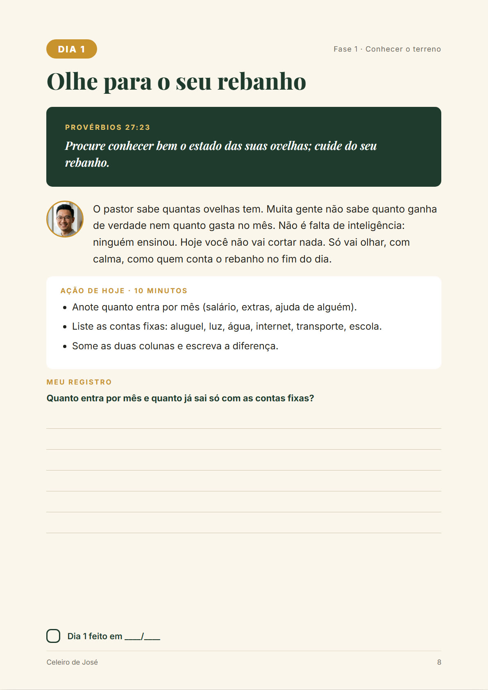

Em 40 dias, com um versículo e uma ação de 10 minutos por dia, você vai organizar o seu dinheiro, começar a sua reserva e criar o hábito de guardar, do jeito que José fez no Egito.
Quero construir o meu celeiroLivro digital + planilha · acesso imediato · garantia de 7 dias
Você não é ruim com dinheiro. Você só aprendeu a ordem errada: gastar primeiro e guardar o que sobrar. E quase nunca sobra.
A Bíblia ensina outra ordem. E ela começa num celeiro.
O faraó sonhou com sete anos de fartura e sete anos de fome. José não parou na previsão: ele deu um plano. Nos anos bons, o Egito guardou a quinta parte de cada colheita. Quando a crise chegou, havia comida para todos.
Guardar primeiro, uma parte fixa, antes de tudo. É a mesma regra que famílias disciplinadas com dinheiro seguem até hoje.
Você descobre para onde vai cada real, sem culpa e sem cortar nada ainda.
Assinaturas esquecidas, compras por impulso e dívida nova: os vazamentos são fechados.
Guardar primeiro, no automático, com meta definida. Começando com 1% e subindo.
Regras para não perder o que guardou, a família no plano e o ano todo organizado.

Cada dia tem uma página: um versículo, uma reflexão curta do Liu Chen, uma tarefa concreta (como achar os gastos invisíveis, cancelar uma assinatura ou agendar o Pix do celeiro) e um espaço para você escrever.
Perdeu um dia? Não recomeça do zero. Continua de onde parou.
56 páginas diagramadas: os 40 dias, a história de José, revisões de fase, compromisso e certificado. Para ler no celular ou imprimir.
Google Sheets pronto: meta da reserva, saldo do celeiro mês a mês, caderno de gastos e barra de progresso dos 40 dias.
O Liu Chen explica como aproveitar a jornada do primeiro ao último dia.
O Liu Chen une a disciplina de quem cresceu aprendendo a guardar primeiro com a sabedoria dos Provérbios. Ele é um personagem criado com IA, e a gente diz isso com todas as letras. As orientações do Celeiro foram escritas e revisadas por pessoas, com uma regra: nada de promessa milagrosa, só passos que cabem na vida real.
No Instagram @liuchen.financas você encontra um versículo e uma ação prática por dia.
Menos que um lanche por semana durante um mês.
Quero o Celeiro de JoséPagamento processado pela Kiwify em ambiente seguro.
Se em até 7 dias você sentir que o Celeiro não é para você, peça o reembolso pela própria Kiwify e recebe o valor de volta, sem perguntas. É o seu direito de arrependimento (Código de Defesa do Consumidor, art. 49).
Dá. O Celeiro começa guardando 1% do que você ganha (R$ 15 de cada R$ 1.500). A ideia é criar o hábito primeiro; o valor cresce aos poucos.
Serve. Os dias 8, 12 e 13 ajudam a listar as dívidas, parar de criar dívida nova e negociar a mais cara. O foco do Celeiro, porém, é criar o hábito de guardar; não é um curso de quitação de dívidas.
Não. Ninguém honesto promete isso. Em 40 dias você vai saber para onde vai o seu dinheiro, ter um celeiro com o seu nome e o hábito de enchê-lo. O quanto você vai guardar depende da sua realidade.
Não. Você só preenche os campos marcados como "entrada"; o resto calcula sozinho. E dá para fazer tudo no caderno, se preferir.
Logo após a confirmação do pagamento, você recebe por e-mail o acesso à área de membros da Kiwify, com o livro, o link da planilha e o vídeo.
Não. O Celeiro usa princípios bíblicos sobre dinheiro e serve para cristãos de qualquer denominação. As decisões sobre dízimo e ofertas são suas e da sua fé.